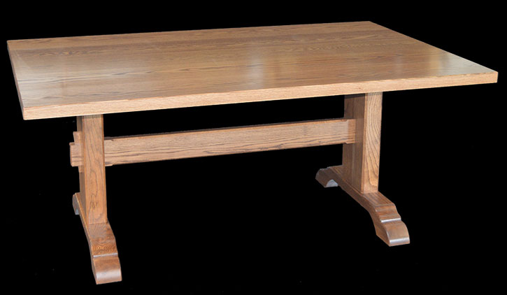

This solid Oak trestle table was for a client that wanted a massive look. 2" thick top with the ends V-grooved between the planks. The trestle supports were 3' thick and the feet are a full 4". Truly massive at 285lbs.

Interested in this piece? Contact Don for pricing and availability.